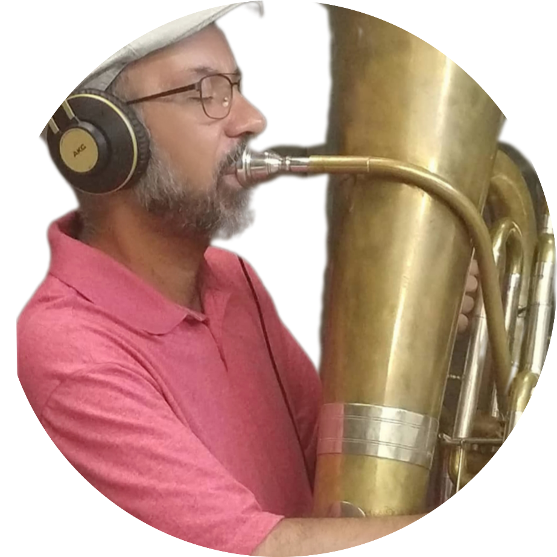

Professor de Artes, Música e Tuba, Tubista com graduação em Música pela Universidade Federal de Minas Gerais, especialista em docência superior, mestrado
em Música na linha de pesquisas interpretativas/pedagogia instrumental, doutorado em Música e Musicologia pela Universidade
de Évora em Portugal, Músico convidado de orquestras, interpretou óperas, ballets e concertos sinfônicos. Fez partes de grupos e trabalhou na implantação da licenciatura em Música no Campus Canindé-CE e atualmente está lotado no Campus Maranguape-CE.